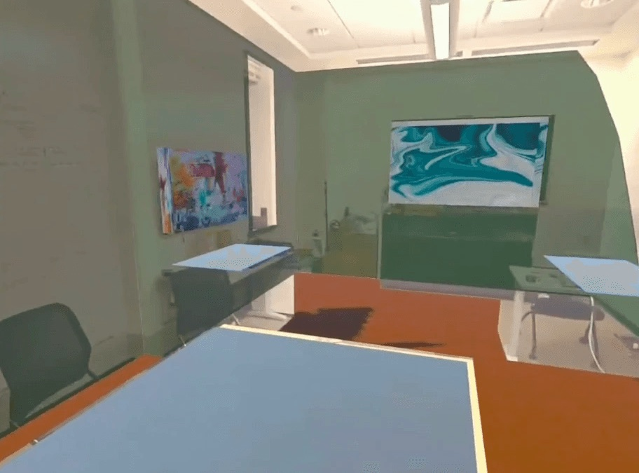

CHI 2027 (In Review)
A Room That Reads the Room: Designing Sensory-Adaptive Mixed Reality Workspaces for Adults with ADHD
Mixed reality workspaces that adapt to the sensory and attentional needs of adults with ADHD. Formative design workshops with four adults shaped an MR prototype, then 13 adults authored 48 sensory-adaptive environments in an exploratory study.
